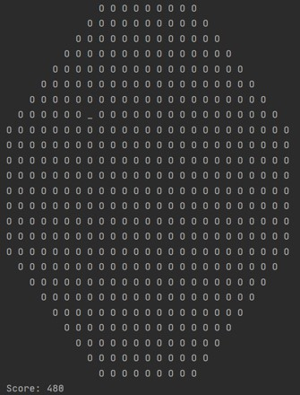
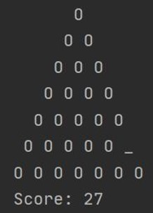
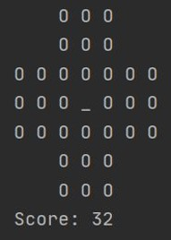

Developed a peg solitaire game that can be played through terminal.
Based on the arguments to the main class, the board can be set to the
default, European, or Triangle styles of the board.
Purpose:
Use object-oriented programming to develop a peg solitaire game
that reuses code for different modes of play
Implementation of decorator pattern



Terminal view of different board settings from
left to right: European style size 9 board with empty
space set 9,9, Triangular size 7 board with empty
space set to 7,7, Default board with undedited size
and empty space
Outcome:
Each board is a different class
The board type, empty space position, and size can be set by
the user
Each marble is defined by a enum that can either be in play,
taken, or out of bounds
Code that is reused is in an abstract board class
Error messages displayed when invalid inputs are entered